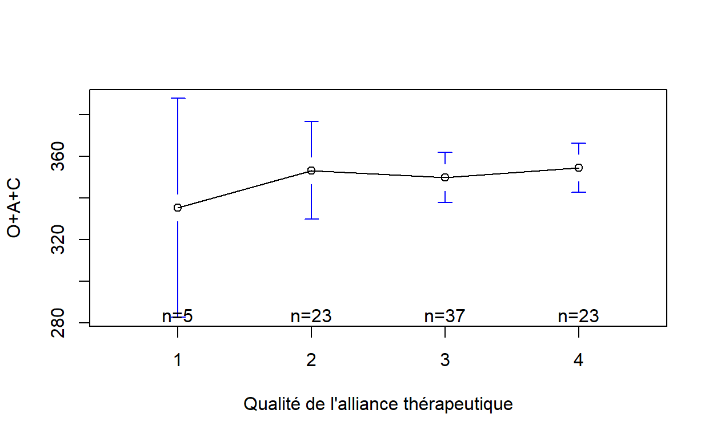
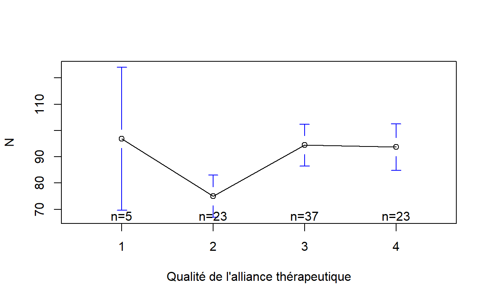
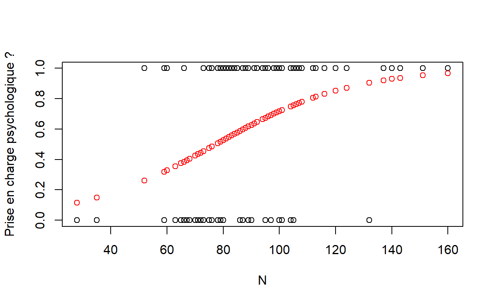
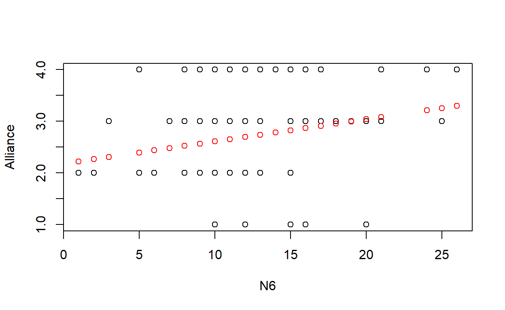

Abstract
L’alliance thérapeutique peut se définir comme la collaboration mutuelle entre le patient et le professionnel dans le but d’accomplir des objectifs fixés. Elle est considérée comme un facteur commun à toutes les prises en charges thérapeutiques. Une étude précédente proposait d’estimer la qualité de l’alliance thérapeutique sur base des scores d’Ouverture, d’Agréabilité et de consciene du modèle de personnalité en cinq facteurs. Nous comparons ici ce score avec l’évaluation de l’alliance thérapeutique et d’une indication de psychothérapie pour 88 personnes, principalement incarcérées. Les résultats montrent que le score n’est pas corrélé significativement avec les deux variables cliniques. Par contre, la variable N6 (Vulnérabilité au stress) semble corrélée significativement à la qualité de l’alliance thérapeutique et la variable N3 (Dépression) à l’indication d’une prise en charge psychothérapeutique. Les cliniciens sont susceptibles de construire un idéal intellectuel de l’alliance thérapeutique mais ce sont des variables plus émotionnelles qui semblent liées à sa qualité dans l’exercice clinique.
Introduction
Lors d’un entretien clinique, le lien entre le patient et le professionnel repose notamment sur l’alliance thérapeutique. Selon Bioy and Bachelart (2010), “l’alliance thérapeutique peut se définir comme la collaboration mutuelle, le partenariat, entre le patient et le thérapeute dans le but d’accomplir les objectifs fixés”. Elle est considérée comme un facteur commun à toutes les prises en charge thérapeutiques. Notons que dans ce texte, nous prenons une définie élargie de l’alliance thérapeutique, c’est-à-dire qu’elle concerne toute relation professionnelle entre un patient et un clinicien sans que le cadre soit strictement thérapeutique. Ainsi, certains auteurs, tels que Greenson (1971), ont plutôt utilisé les termes d’alliance de travail car “chacun, sujet et professionnel, devient, pour un temps, partenaire, coacteur de cette rencontre de travail” (Cognet 2022). A l’occasion d’une étude précédente (Thiry 2020), nous avons défini trois variables basées sur le modèle en cinq facteurs qui permettent d’évaluer les caractéristiques psychologiques d’un patient susceptibles de faciliter ou de freiner l’alliance thérapeutique. Une étude suivante (Thiry 2022) a montré que ces trois indices étaient redondants et qu’un seul pouvait être retenu :
\[ Alliance1 = O+A+C \]
Il s’agit d’additionner les scores obtenus aux domaines Ouverture, Agréabilité et Conscience du modèle en cinq facteurs. Bien que nous ayons fourni des données statistiques relatives à cette variable, nous ne disposions pas de données relatives à sa validité externe. Le but de cette étude est de fournir des résultats concernant cette validité externe. Pour ce faire, nous souhaitons comparer les scores obtenus par des patients au NEO PI et l’évaluation de l’alliance thérapeutique faite par des psychologues. Le score obtenu par les patients à l’indice Alliance1 (O+A+C) est-il lié à cette évaluation de l’alliance faite par les psychologues ? L’hypothèse de départ est que plus le score d’Alliance1 est élevé, plus l’alliance thérapeutique est estimée bonne par les psychologues.
Méthode
Participants
Les participants sont 88 personnes francophones. Parmi ces participants 81 ont été condamnés ou internés et sont détenus dans des prisons belges et 7 patients ont été reçus dans un service de consultation ambulatoire. Les détenu(e)s font l’objet d’une évaluation psychologique dans le cadre d’une demande de libération conditionnelle tandis que les patients font l’objet d’une évaluation en vue d’une éventuelle prise en charge thérapeutique. L’échantillon se compose de 76 hommes (86%) et de 12 femmes (14%). L’âge moyen est égal à 34.26 (ET = 10.12, min = 19, max = 66) ans. Dans le cadre de cette évaluation, le / la psychologue en charge de l’évaluation peut administrer des tests psychologiques tels que le NEO PI (R ou 3). La personne évaluée peut accepter ou refuser de passer ce test. En cas d’accord, le test est administré, coté, interprété puis discuté avec elle de manière la plus transparente possible. Notons à ce titre (et c’est important ici de le mentionner), que si la personne est réfractaire à l’évaluation et à rencontrer le / la psychologue, la passation de tests auto-rapportés est généralement compromise, déconseillée et parfois impossible. La passation de tests nécessite de facto une collaboration minimale.
Echelles de mesure
NEO PI
Le NEO PI est un questionnaire de personnalité autorapporté se composant de 240 affirmations pour lesquelles les participants doivent indiquer sur la feuille de réponses s’ils sont Fortement en Désaccord, en Désaccord, Neutre, en Accord ou Fortement en Accord. Les réponses permettent de calculer des scores pour les cinq domaines et pour les trente facettes du modèle de personnalité en cinq facteurs (Névrosisme, Extraversion, Ouverture, caractère Agréable et caractère Consciencieux). L’inventaire NEO PI-R (R pour Révisé) a été publié en 1992 en anglais puis en 1998 pour la version française (Costa, McCrae, and Rolland 1998). Le NEO PI 3 existe quant à lui depuis 2005 en anglais et depuis 2016 en français (McCrae and Costa 2016). Il existe peu de différences entre les deux versions du test : seuls quelques items de la version 3 ont été reformulés afin d’être plus facilement compris par les participants. Le sens des items n’étaient pas modifiés.
Pour chaque détenu(e) ou patient(e) qui avait passé le NEO PI, nous avons demandé au psychologue en charge de son évaluation de répondre à deux questions.
Quelle est la qualité de l’alliance thérapeutique entre vous et la personne évaluée ?
| Code | Caractéristiques de l’alliance thérapeutique |
|---|---|
| 1 | Le sujet refuse le cadre des entretiens cliniques. Il ne se présente pas aux entretiens ou s’y rend pour contester leur utilité ou critiquer le / la psychologue. |
| 2 | Le sujet accepte de rencontrer le / la psychologue par obligation. Il répond aux questions de manière laconique et superficielle sans exprimer nécessairement son opposition de manière explicite. |
| 3 | Le sujet accepte volontiers de rencontrer le / la psychologue et répond aux questions de manière authentique. Il semble lui faire confiance dans la réalisation de l’évaluation psychologique |
| 4 | Le sujet se montre très investi dans le processus d’évaluation, se montre demandeur de rencontrer le / la psychologue, participe activement à la réflexion et évoque parfois combien les entretiens précédents l’ont amené à changer son point de vue sur lui-même ou sur le monde. |
Selon vous, la personne tirerait-elle avantage d’une prise en charge psychologique ?
| Code | Réponse |
|---|---|
| 0 | Non |
| 1 | Oui |
Résultats
Le score O+A+C du NEO PI moyen pour notre échantillon est égal à 351.08 (ET = 39.64, min. = 151.00, max. = 431.00). La figure 1 indique la fréquence des scores de qualité d’alliance thérapeutique évaluée par les psychologues pour chaque sujet.

Figure 1: Qualité d’alliance thérapeutique
Nous constatons que l’alliance est souvent qualifiée de bonne (3) ou de très bonne (4). Ce score de qualité d’alliance thérapeutique est-il corrélé avec l’indice O+A+C que nous avons créé à partir du modèle de personnalité en cinq facteurs ?
La corrélation entre les variables O+A+C et alliancepsy est égale à 0 (p = .991), c’est-à-dire nulle. Les deux variables peuvent être estimées indépendantes l’une de l’autre.

Figure 2: Qualité de l’alliance thérapeutique
La figure 2 illustre cette absence de corrélation : les moyennes obtenues pour chaque score d’alliance thérapeutique évaluée par le / la psychologue ne diffèrent pas les unes des autres de manière significative. Qu’en est-il du lien éventuel entre les scores O+A+C et le pertinence (ou non) d’une prise en charge thérapeutique aux yeux du / de la psychologue ?
Nous pouvons comparer les moyens moyens obtenus pour la variable O+A+C pour les deux groupes de détenus, d’une part ceux pour lesquels une prise en charge psychologique est conseillée et d’autre part ceux pour lesquels elle ne l’est pas. A l’aide d’un test t, nous contatons que les deux moyennes ne sont pas significativement différentes (t = 62.957, p = .819).
La figure 3 permet de constater visuellement que les scores pour O+A+C sont globalement identiques pour les deux groupes.

Figure 3: Score de O+A+C selon l’indication de prise en charge thérapeutique
L’indice O+A+C ne semble dès lors pas offrir de validité externe avec les deux questions posées aux psychologues relatives à la qualité de l’alliance et le pertinence d’une thérapie.
Afin de poursuivre nos investigations, nous pouvons nous demander si d’autres domaines de la personnalité pourraient quant à eux avoir un effet sur les deux questions posées.
Lien entre la personnalité du sujet et la qualité de l’alliance thérapeutique
Pour répondre à cette question, nous avons calculé la corrélation de Spearman (non paramétrique) entre les cinq grands domaines de la personnalité tels qu’évalués par le NEO PI et les deux variables d’évaluation de l’alliance évaluées par les psychologues. Le tableau tablecor.df montre le résultat de ces corrélations.
| Domaine | r | p |
|---|---|---|
| N | 0.25 | 0.02 |
| E | -0.02 | 0.84 |
| O | 0.05 | 0.66 |
| A | 0.04 | 0.69 |
| C | -0.03 | 0.75 |
Le tableau 1 semble indiquer un lien significatif entre le score obtenu au névrosisme par le sujet et la qualité de l’alliance thérapeutique évaluée par le / la psychologue : au plus ce score serait élévé, au plus l’alliance serait bonne. Les quatre autres domaines de la personnalité (Extraversion, Ouverture, Agréabilité et Conscience) ne semblent pas liés avec la qualité de l’alliance. Intéressons nous au lien entre névrosisme et l’alliance thérapeutique.
Névrosisme des sujets et qualité de l’alliance thérapeutique

Figure 4: Score de N selon la qualité d’alliance thérapeutique
La figure 4 semble suggérer que les scores de névrosisme seraient plus élevés lorsque les psychologues rapportent une alliance thérapeutique bonne ou très bonne alors que les scores seraient inférieurs pour les alliances thérapeutiques inférieures. Pour vérifier cette impression, nous créons deux groupes : un premier groupe de détenus pour lesquelles l’alliance a été cotée 1 ou 2 (mauvaise alliance) et un second groupe pour lesquels l’alliance a été cotée 3 ou 4 (bonne alliance). Quels sont les scores de névrosisme pour ces deux groupes ?

Figure 5: Score de N selon la qualité d’alliance thérapeutique
La figure 5 montre que si nous comparons les scores de névrosisme pour ces deux groupes de sujets, nous constatons qu’ils sont significativement différents (t = 56.725, p = .003).
Lien entre la personnalité des sujets et la pertinence d’une psychothérapie
Afin d’analyser ce lien, nous construisons un modèle de prédiction selon lequel, les variables N, E, O, A et C sont prises comme variables indépendants et la variable therapie comme variable dépendante. Comme il s’agit d’une variable binaire (0 ou 1), nous utilisons une régression logistique.
| term | estimate | conf.int | statistic | p.value |
|---|---|---|---|---|
| Intercept | -6.50 | [-14.65, -0.01] | -1.70 | .089 |
| N | 0.05 | [0.02, 0.09] | 2.74 | .006 |
| E | 0.00 | [-0.03, 0.03] | -0.20 | .842 |
| O | 0.00 | [-0.03, 0.04] | 0.19 | .845 |
| A | 0.01 | [-0.02, 0.05] | 0.75 | .454 |
| C | 0.01 | [-0.02, 0.04] | 0.63 | .526 |
Le modèle de régression présenté dans le tableau 2 permet de constater que seule la variable N permet de prédire le score de la variable therapie de manière significative : .
La figure 6 représente le lien entre la variable N et la variable therapie. Ainsi peut-on constater que lorsque le score en N augmente, la probabilité que le / la psychologue encourage une prise en charge thérapeutique augmente.

Figure 6: Lien entre la variable N et la variable therapie
Facettes du NEOPI et qualité de l’alliance thérapeutique
Au-delà des cinq grands domaines de la personnalité, nous avons également calculé les corrélations de Spearman entre les trente facettes de la personnalité et la variable O+A+C. Aucune facette n’est significativement corrélée au seuil .05 pour les domaines de l’Extraversion, de l’Ouverture, du caractère Agréable ou du caractère Consciencieux. Par contre, certaines le sont concernant le domaine du Névrosisme.
Facettes de N et qualité de l’alliance thérapeutique
| Facette | r | p |
|---|---|---|
| N1 | 0.07 | 0.49 |
| N2 | 0.18 | 0.1 |
| N3 | 0.23 | 0.03 |
| N4 | 0.16 | 0.13 |
| N5 | 0.02 | 0.88 |
| N6 | 0.30 | .004 |
Le tableau 3 montre que deux factettes du névrosisme seraient significativement corrélées avec la qualité de l’alliance thérapeutique : N6 (Vulnérabilité au stress) et N3 (Dépression). A l’aide d’une équation de régression linéaire, nous pouvons tenter de prédire la qualité de l’alliance thérapeutique à partir des variables N6 (la variable la plus corrélée) et N3.
| term | estimate | conf.int | statistic | df | p.value |
|---|---|---|---|---|---|
| Intercept | 2.21 | [1.61, 2.81] | 7.35 | 85 | < .001 |
| N6 | 0.04 | [0.00, 0.09] | 1.84 | 85 | .070 |
| N3 | 0.01 | [-0.03, 0.05] | 0.45 | 85 | .652 |
Nous constatons toutefois que l’introduction de ces deux variables indépendantes fragilise le modèle prédictif bien qu’il reste significatif : \(R^2 = .08\), 90% CI \([0.00, 0.17]\), \(F(2, 85) = 3.50\), \(p = .035\). Nous décidons dès lors de ne retenir que la variable la plus corrélée, c’est-à-dire N6.
| term | estimate | conf.int | statistic | df | p.value |
|---|---|---|---|---|---|
| Intercept | 2.29 | [1.80, 2.78] | 9.31 | 86 | < .001 |
| N6 | 0.05 | [0.01, 0.08] | 2.62 | 86 | .010 |
Ce modèle présenté dans le tableau 5 nous permet de constater que la variable N6 permet de prédire une partie de la variance de la variable de qualité d’alliance thérapeutique : \(R^2 = .07\), 90% CI \([0.01, 0.18]\), \(F(1, 86) = 6.85\), \(p = .010\).

Figure 7: Lien entre la variable N6 et l’alliance thérapeutique
La figure 7 indique que plus le score de N6 augmente, au plus l’alliance est estimée meilleure par les psychologues.
Facettes de N et l’indication de prise en charge thérapeutique
Pour obtenir une première estimation du lien entre les facettes du Névrosisme et la tendance à poser une indication de prise en charge thérapeutique, nous calculons une corrélation de Spearman entre les variables.
| Facette | r | p |
|---|---|---|
| N1 | 0.25 | .017 |
| N2 | 0.17 | .108 |
| N3 | 0.37 | < .001 |
| N4 | 0.32 | .002 |
| N5 | 0.11 | .303 |
| N6 | 0.36 | .001 |
Le tableau 6 indique quatre variables seraient significativement corrélées avec l’indication de prise en charge : N3 (Dépression), N6 (Vulnérabilité au stress), N4 (Timidité sociale) et N1 (Anxiété). Afin d’étudier ces liens de manière plus approfondie, nous construisons un modèle de régression logistique qui tente de prédire l’indication thérapeutique avec quatre variables indépendantes : N3, N6, N4 et N1.
| term | estimate | conf.int | statistic | p.value |
|---|---|---|---|---|
| Intercept | -3.46 | [-6.04, -1.26] | -2.86 | .004 |
| N3 | 0.09 | [-0.04, 0.24] | 1.32 | .186 |
| N6 | 0.06 | [-0.08, 0.21] | 0.87 | .384 |
| N4 | 0.04 | [-0.13, 0.20] | 0.44 | .664 |
| N1 | 0.07 | [-0.05, 0.19] | 1.11 | .269 |
L’introduction des quatre variables dans le modèle prédictif semble toutefois l’affaiblir comme l’indique le tableau 7. Après comparaison de différents modèles pour lesquels une seule de ces variables est prise comme variable indépendante, il apparaît que c’est le modèle qui implique N3 qui est le plus significatif, les autres variables n’apportant pas d’information supplémentaire.
| term | estimate | conf.int | statistic | p.value |
|---|---|---|---|---|
| Intercept | -2.17 | [-3.92, -0.63] | -2.62 | .009 |
| N3 | 0.16 | [0.07, 0.27] | 3.18 | .001 |
Le tableau 8 indique que la variable N3 présente une meilleure significativité lorsqu’elle est prise seule dans le modèle prédictif de la tendance des psychologues à poser une indication thérapeutique.
Discussion
Les résultats indiquent que dans la plupart des cas, les psychologues estiment avoir une (très) bonne alliance thérapeutique avec les détenu(e)s ou patient(e)s qu’ils évaluent. Dans le premier cas de figure, ce résultat peut surpendre compte tenu du cadre global (carcéral répressif) et de la situation d’évaluation (de nature expertale). Nous pouvons toutefois l’expliquer par deux raisons principales :
- l’évaluation psychologique carcérale nécessite des entretiens préalables au cours desquels les psychologues tentent de construire une relation de confiance à tout le moins minimale. Psychologue et détenu(e) sont unis par des objectifs communs qui visent à comprendre le parcours de vie pré-carcéral, les raisons du passage à l’acte délictueux et la tentative de prévoir un projet post-carcéral respectueux des souhaits du détenu et de la loi ;
- les détenu(e)s de notre échantillon ont accepté la passation d’un test psychologique (le NEO PI), ce qui va bien souvent de pair avec une relation de confiance minimale. Le / la psychologue que le / la détenu(e) menace explicitement d’agression, ne lui propose généralement pas de répondre à un questionnaire de personnalité auto-rapporté.
Nos résultats montrent également que l’indice O+A+C que nous avions retenu pour tenter de prédire la qualité de l’alliance thérapeutique n’est pas significativement corrélé avec l’évaluation de cette alliance par le / la psychologue en charge de son évaluation. Dans nos études précédentes (Thiry 2020, 2022), nous avions déjà pu nous étonner du caractère ambitieux de l’indice O+A+C du point de vue intellectuel, relationnel et cognitif et de l’absence d’éléments plus émotionnels (ce qui nous apparaissait contre-intuitif avec l’idée que la souffrance pourrait faciliter une prise en charge thérapeutique). C’est la raison pour laquelle, nous avons décidé de nous intéresser aux liens éventuels entre la qualité de l’alliance thérapeutique et les autres domaines de la personnalité. Ainsi constatons-nous que le Névrosisme des sujets semble positivement corrélé avec la qualité d’alliance thérapeutique évaluée par les psychologues. Il semble donc que ceux-ci nouent un lien clinique plus intense avec les personnes qui rapportaient des affects négatifs et désagréables. En poursuivant davantage nos investigations au niveau des facettes de personnalité, nous sommes rendus compte que c’est la variable N6 (Vulnérabilité au stress) qui était particulièrement prédictrice de la qualité de l’alliance thérapeutique alors que c’était la variable N3 (Dépression) qui était particulièrement prédictrice de la propension des psychologues à poser une indication de prise en charge thérapeutique. Selon McCrae and Costa (2016, 34), la variable N6 est définie ainsi :
Les personnes qui ont des notes élevées à cette échelle ont tendance à penser qu’elles sont peu capables de faire face aux situations difficiles, problématiques et stressantes. Quand elles se trouvent dans des situations d’urgence et de stress, elles peuvent être débordées par leurs émotions (émotions négatives telles que l’anxiété ou la peur) et éventuellement “paniquer”.
Egalement selon McCrae and Costa (2016, 33), la variable N3 est définie ainsi :
Cette échelle mesure les différences interindividuelles concernant la tendance à éprouver des affects de type dépressif. Les personnes ayant des notes élévées à cette échelle ont tendance à éprouver des sentiments tels que la culpabilité, la tristesse, des sentiments de solitude et parfois de désespoir. Elles peuvent être facilement découragées et abattues.
Il semble donc que lorsque les psychologues sont amenés à évaluer la qualité de l’alliance thérapeutiques, ils soient sensibles aux capacités d’adaptation à des situations potentiellement difficiles. En outre, il est possible que les patients plus sensibles au stress soient plus enclins à nouer des liens privilégiés avec un professionnel susceptibles de les aider. Se sentant moins assurés, ils pourraient avoir tendance à se fier au psychologue, perçu comme une personne plus compétente à résoudre les problèmes. Ce vécu de vulnérabilité au stress pourrait être lié à une position plus immature voire infantile qui suscite la recherche d’une bonne mère au sens où l’entendait Winnicott (1960). La qualité de l’alliance thérapeutique reposerait dès lors sur des bases plus émotionnelles que les psychologues pourraient le penser rationnellement. Elle reposerait en partie sur la croyance, consciente ou non, du patient que le psychologue est susceptible de l’aider à résoudre ses problèmes personnels. Cette position évoque une idéalisation plus ou moins prononcée du psychologue. Cette idéalisation a été décrite à de nombreuses reprises dans la littérature et trouve ses racines dans les conceptualisations de Freud and Breuer (1895) sur le transfert qui fut notamment repris par Lacan (1967) sous le concept de sujet supposé savoir. L’étude de l’idéalisation du psychothérapeute par le patient s’inscrit dans le cadre des relations thérapeutiques et de leurs effets sur les résultats cliniques. Selon le modèle de transfert et de contre-transfert développé par Freud (1912), l’idéalisation du thérapeute peut être comprise comme une forme de transfert positif, où des attributs positifs sont projetés sur le thérapeute, facilitant ainsi la relation thérapeutique. Des travaux tels que ceux de Kohut (1971) ont mis en évidence l’importance de la relation thérapeutique en tant que source de guérison psychologique, où l’idéalisation peut jouer un rôle dans le renforcement de l’estime de soi du patient. Cependant, des chercheurs comme Mitchell (1988) ont également souligné la nécessité de gérer cette idéalisation de manière à éviter des attentes irréalistes et des ruptures thérapeutiques. Une revue de la littérature par Høglend (2014) montre l’effet du transfert positif sur l’alliance thérapeutique et les résultats de la thérapie. Les résultats ont montré une corrélation positive entre le transfert positif initial et l’alliance thérapeutique, suggérant que l’idéalisation peut contribuer à l’établissement d’une alliance solide entre le patient et le thérapeute. Cependant, il convient de noter que des auteurs tels que Safran and Muran (1996) ont souligné que l’idéalisation excessive peut entraver la compréhension des problèmes sous-jacents du patient. Ainsi, le thérapeute doit être attentif à l’évolution de cette dynamique et travailler à la fois avec l’idéalisation et les réactions éventuelles de déception ou de colère qui peuvent en découler. En somme, l’idéalisation du psychothérapeute par le patient peut influencer la qualité de la relation thérapeutique et, par conséquent, les résultats de la thérapie. Toutefois, il est essentiel de gérer cette idéalisation de manière équilibrée et d’être conscient de ses effets potentiels sur la dynamique thérapeutique, en tenant compte des multiples facettes des interactions complexes entre le patient et le thérapeute.
Il s’agit toutefois des rester prudent dans la généralisation de cette étude. En effet, l’échantillon reste de taille modeste et porte surtout sur une population particulière, à savoir des personnes incarcérées. Elle s’intéresse dès lors à la création d’une alliance de travail avec des personnes qui consultent rarement des psychologues de manière spontanée. Cette création est importante car elle permet d’envisager éventuellement une prise en charge plus large et continue.